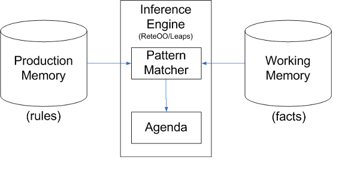

You can build a simple rules engine yourself. All you need is to create a bunch of objects with conditions and actions, store them in a collection, and run through them to evaluate the conditions and execute the actions.
-Martin Fowler
为什么会有规则引擎 ？
背景：复杂企业级项目的开发以及其中随外部条件不断变化的业务规则（business logic），迫切需要分离商业决策者的商业决策逻辑和应用开发者的技术决策，并把这些商业决策放在中心数据库或其他统一的地方，让它们能在运行时（即商务时间）可以动态地管理和修改从而提供软件系统的柔性和适应性。规则引擎正是应用于上述动态环境中的一种解决方法。
企业管理者对企业级IT系统的开发有着如下的要求：
- 为提高效率，管理流程必须自动化，即使现代商业规则异常复杂；
- 市场要求业务规则经常变化，IT系统必须依据业务规则的变化快速、低成本的更新；
- 为了快速、低成本的更新，业务人员应能直接管理IT系统中的规则，不需要程序开发人员参与；
什么是规则引擎 ？
也许这又是一种“先有蛋还是先有鸡”哲学争论，在JSR-94种也几乎没有定义,规则引擎这个术语是非常不明确的，因为任何以任意形式使用能够应用于数据生成结果的规则的系统都可以称为规则引擎。包括像表单验证和动态表达式引擎这样的简单系统都可以称之为规则引擎。
可以这样理解规则引擎由推理引擎发展而来，是一种嵌入在应用程序中的组件，实现了将业务决策从应用程序代码中分离出来，并使用预定义的语义模块编写业务决策。接受数据输入，解释业务规则，并根据规则做出业务决策。
Drools is Rule Engine or a Production Rule System（产生式规则系统） that uses the rule-based approach to implement and Expert System. Expert Systems（专家系统） are knowledge-based systems that use knowledge representation（知识表达） to process acquired knowledge into a knowledge base（知识库） that can be used for reasoning（推理）.
A Production Rule System is Turing complete with a focus on knowledge representation to express propositional and first-order logic in a concise, non-ambiguous and declarative manner.
The brain of a Production Rules System is an Inference Engine（推理机） that can scale to a large number of rules and facts. The Inference Engine matches facts and data against Production Rules（根据规则匹配数据和事实）
– also called Productions or just Rules – to infer conclusions which result in actions.
A Production Rule is a two-part structure that uses first-order logic（一阶逻辑） for reasoning over knowledge representation.
A business rule engine（商业规则引擎） is a software system that executes one or more business rules in a runtime production environment.
A Rule Engine（定义做什么而不是怎么做） allows you to define “What to Do”（声明式编程） and not “How to do it.”（命令式编程）
规则引擎的优点
Declarative Programming（声明式编程）
规则引擎允许你描述做什么而不是如何去做。
这里的主要优点是使用规则更加容易对复杂的问题进行表述，并得到验证。 (规则比编码更容易阅读).
规则系统能够解决非常非常困难的问题，并提供了方案怎样达到和在解决问题的方向上所作的每一个决定的原因（这对于类似神经网络这样的AI系统来说不容易达到）
与code不同，DSL易于编写复杂业务逻辑，对复杂问题的描述也变得简单化，且更易于阅读，理解和核查。
如SQL和D3.js也是声明式编程
Logic and Data Separation（逻辑与数据分离）
The data resides in the Domain Objects and the business logic resides in the Rules. Depending upon the kind of project, this kind of separation can be very advantageous.
数据保存在系统对象中，逻辑保存在规则中。这根本性的打破了面向对象系统中将数据和逻辑耦合起来的局面，这点是有利的也是不利的，在于你的观察角度。
这样做的结果是，未来逻辑发生改变时更容易被维护，因为逻辑保存在规则中，这点在逻辑是跨领域或多领域中使用时尤其有用。
通过将逻辑集中在一个或数个清晰的规则文件中，取代了之前分散在代码中的局面。
Speed and Scalability（速度和可测量性）
The Rete OO algorithm on which Drools is written is already a proven algorithm. With the help of Drools, your application becomes very scalable. If there are frequent change requests, one can add new rules without having to modify the existing rules.
Rete算法、Leaps算法,以及由此衍生出来的 Drools的 Rete、Leaps算法，提供了对系统数据对象非常有效率的匹配。这些都是高效率尤其当你的数据是不完全的改变（规则引擎能够记得之前的匹配）。这些算法经过了大量实际考验的证明。
Centralization of Knowledge（集中化知识管理）
By using Rules, you create a repository of knowledge (a knowledge base) which is executable. It is a single point of truth for business policy. Ideally, Rules are so readable that they can also serve as documentation.
通过使用规则，将建立一个可执行的规则库。这意味着规则库代表着现实中的业务策略的唯一对应，理想情况下可读性高的规则还可以被当作文档使用。
Tool Integration（工具集成）
Tools such as Eclipse provide ways to edit and manage rules and get immediate feedback, validation, and content assistance. Auditing and debugging tools are also available.
例如Eclipse（将来可能在基于Web的界面上）这样的工具为规则的修改与管理、即时获得反馈、内容验证与修补提供了办法。审查与调试工具同样也可用了。
什么情况下使用规则引擎 ？
最简短的回答就是“当没有令人满意的传统的程序设计方法能够解决这个问题时”。
下面对这个所谓的传统解决方法的一个描述：
- 对于传统代码来说，问题需要的精确度太高。
- 这种问题可能并不复杂，但是你找不到一种稳定的方法去建立它。
- 问题超越了任何有明显运算法则的方案。
- 它是一个难以解决的复杂问题，没有明显的传统解决方案或者问题没有一个准确的定论。
- 业务逻辑经常发生改变：逻辑本身是简单的（但不是指过于简单），但是规则经常发生变化。在许多软件组织中正式版本的间隔是较长并且较少的，规则可以在适当的安全前提下帮助提供一定的敏捷性。
- 领域专家（或者业务分析师）是非技术人员：领域专家通常对业务规则和流程具有很好的认知。他们通常是不了解软件技术的人员，但是具有很好的逻辑性。规则能够让他们用自己的术语来描述业务逻辑。当然他们仍然需要严密的思考和良好的逻辑思维能力（许多在非软件技术型岗位上的人没有进行过形式逻辑的训练，因此在和他们工作时要特别小心，在将业务知识编撰成规则时，要特别注意业务规则和流程应当是当前能够理解的）。
什么情况下不能使用规则引擎 ？
- 因为规则引擎是动态的 (动态的在这里意味着规则可以象数据一样保存、管理和更新),它们通常被看作发布软件系统的一种解决方案(大多数IT部门似乎存在的目的是防止软件系统被遗弃)。如果这是你希望使用规则引擎的原因，应当意识到在可以写出公开发布的规则时，规则引擎能够以最佳方式工作。
- 另一个方面，你也可以考虑使用数据驱动的设计（查找表）或者脚本/流程引擎等有能够在数据库中管理并能够动态更新的脚本。对特定的工作要使用恰当的工具。
当然，必要时老虎钳可以当作锤子用，但那并不是发明老虎钳的本意。”
Drools
一个应用程序一般可分为3部分：一个和用户交互的前台(UI), 一个和后台系统，例如数据库交互的服务层(DAO)，以及他们中间的业务逻辑(BLL)。
使用框架构建前台和后台系统已经成为普遍共识，如 Spring , Struts，Hibernate，Mybatis等；
而没有一个标准的方法来构建业务逻辑，为什么没有一个框架来替换冗繁，易错的if…then语句呢，这个框架应该和其它前台或后台框架一样，易于配置，具有可读性和重用性。
Drools 规则引擎就是解决我们这个问题的框架。
Drools是一个基于java的规则引擎，开源的，可以将复杂多变的规则从硬编码中解放出来，以规则脚本的形式存放在文件中，使得规则的变更不需要修正代码重启机器就可以立即在线上环境生效。
Drools is a business rule management system (BRMS) with a forward and backward chaining inference based rules engine, more correctly known as a production rule system, using an enhanced implementation of the Rete algorithm.
KIE (Knowledge Is Everything) is the new umbrella name to drools, optaPlanner, jBPM, Guvnor, uberFire and related technologies.
Drools supports the JSR-94 standard for its business rule engine and enterprise framework for the construction, maintenance, and enforcement of business policies in an organization, application, or service.Drools is a Business Logic integration Platform (BLiP). It is written in Java. It is an open source project that is backed by JBoss and Red Hat, Inc. It extends and implements the Rete Pattern matching algorithm（实现并扩展了Rete模式匹配算法）.
In layman’s terms, Drools is a collection of tools that allow us to separate and reason over logic and data found within business processes（分离数据与业务逻辑，推理）. The two important keywords we need to notice are Logic and Data.
Drools 分为两个主要部分：构建（ Authoring ）和运行时（ Runtime ）。
Authoring（构建）
构建的过程涉及到.drl或.xml规则文件的创建，它们被读入一个解析器，使用ANTLR3语法进行解析。
解析器对语法进行正确性的检查，然后产生一种中间结构“ descr ”， descr 用 AST 来描述规则。
AST 然后被传到PackageBuilder ，由 PackagBuilder 来产生 Packaged 对象。
PackageBuilder 还承担着一些代码产生和编译的工作，这些对于产生 Package 对象都时必需的。
Package 对象是一个可以配置的，可序列化的，由一个或多个规则组成的对象。
Runtime（运行时）
It involves the creation of working memory(被推理机进行匹配的数据称为 WorkingMemory) and handling the activation.
Rule（规则）
Rules are pieces of knowledge often expressed as, “When some conditions occur, then do some tasks.”
Pattern Matching（模式匹配）
对新的数据和被修改的数据进行规则的匹配称为模式匹配（ Pattern Matching ）。进行匹配的引擎称为推理机（Inference Engine ）。被访问的规则称为 ProductionMemory ，被推理机进行匹配的数据称为 WorkingMemory。 Agenda 管理被匹配规则的执行。
推理机所采用的模式匹配算法有下列几种： Linear，RETE，Treat，Leaps。
DroDrools是为Java量身定制的基于Charles Forgy的RETE算法的规则引擎的实现。具有了OO接口的RETE,使得商业规则有了更自然的表达。
在规则引擎中，将知识表达为规则（rules），要分析的情况定义为事实（facts）。
二者在内存中的存储分别称为Production Memory和Working Memory，如下图：

rules和facts是规则引擎接受的输入参数，而规则引擎本身包括两个组成部分：Pattern Matcher和Agenda。Pattern Matcher根据facts找到匹配的rules，Agenda管理PatternMatcher挑选出来的规则的执行次序。在外围，还会有一个执行引擎（Execution Engine）负责根据Agenda输出的rules执行具体的操作。
其中Pattern Matcher是规则引擎负责推理的核心。和人类的思维相对应，
规则引擎中也存在两种推理方式：正向推理（Forward-Chaining）和反向推理（Backward-Chaining）。
- 正向推理也叫演绎法，由事实驱动，从 一个初始的事实出发，不断地应用规则得出结论。首先在候选队列中选择一条规则作为启用规则进行推理，记录其结论作为下一步推理时的证据。如此重复这个过程，直到再无可用规则可被选用或者求得了所要求的解为止。
- 反向推理也叫归纳法，由目标驱动，首先提出某个假设，然后寻找支持该假设的证据，若所需的证据都能找到，说明原假设是正确的；若无论如何都找不到所需要的证据，则说明原假设不成立，此时需要另做新的假设。
Drools-常用术语
Rules（规则）
The heart of the Rules Engine where you specify conditions (if ‘a’ then ‘b’).
业务调研中很重要的内容就是了解业务规则。在企业流程中，可能还会接触到流程规则。
在IT技术领域，很多地方也应用了规则，比如路由表，防火墙策略，乃至角色权限控制(RBAC)，或者Web框架中的URL匹配。
不管是哪种规则，都规定了一组确定的条件和此条件所产生的结果。
- 每条规则都是一组条件决定的一系列结果；
- 一条规则可能与其他规则共同决定最终结果；
- 可能存在条件互相交叉的规则，此时有必要规定规则的优先级；
Facts（事实）
Facts are the data on which the rules will act upon.
From Java perspective, Facts are the POJO (Plain Old Java Object).
KnowledgeBuilder
KnowledgeBuilder是用来在业务代码中收集已经编好的规则，找到这些规则并把这些规则文件进行编译，
最终产生一批编译好的KnowledgePackage（规则包）给其它的应用程序使用。
创建KnowledgeBuilder对象使用的是KnowledgeBuilderFactory的newKnowledgeBuilder方法。
Knowledge Base
- Knowledge Base是管理一系列rules, processes和 internal types的接口. 它在
org.drools.KnowledgeBase包中； - KnowledgeBase 是Drools提供的用来收集应用当中知识（Knowledge）定义的知识库对象，在一个KnowledgeBase当中可以包含普通的规则、规则流、函数定义、用户自定义对象等；
- KnowledgeBase本身不包含任何业务数据对象(fact 对象)，业务对象都是插入到由KnowledgeBase产生的两种类型的session对象；
- 一系列Knowledge definitions组成knowledge packages；
- Knowledge definitions 可以新增和移除；
- Knowledge Base的主要目的是为了重用，因为Knowledge definitions成本很高；
- Knowledge Base 提供新建knowledge sessions的方法；
Session
knowledge session是激发规则的核心组件，knowledge session容纳所有规则和资源， knowledge session由KnowledgeBase创建。
规则引擎工作时会将facts插入session中，当满足特定的condition时，对应的rule就会被激发。
knowledge session从knowledge base中获取，是与drools规则引擎交互的主要接口，knowledge session有两种类型:
Stateful Knowledge Session
StatefulKnowledgeSession对象是一种最常用的与规则引擎进行交互的方式，它可以与规则引擎建立一个持续的交互通道。
StatefulKnowledgeSession执行完之后一定要调用dispose()方法释放资源。
StatefulKnowledgeSession可以接受外部插入(insert方法)的业务数据——也叫fact，一个对象通常可以对应一个普通的POJO, 而一个POJO有若干个属性来描述这个业务对象，比如一个PeopleEvent中包含了isComing(人是否进来属性), roomed(房间号)，每一个属性对应getter和setter方法，供规则定义来使用（注意：在规则定义中isComing默认的getter方法是getIsComing()）。
如果规则当中需要有数据传出，那么可以通过在StatefulKnowledgeSession当中设置global对象来实现，一个global对象也是一个普通的Java对象，在向StatefulKnowledgeSession当中设置global对象时不用insert方法而用setGlobal方法实现。
一些stateless session常用的用例：
- Monitoring 监控
Stock market monitoring and analysis for semi-automatic buying. - Diagnostics 诊断
Fault finding, medical diagnostics - Logistics
Parcel tracking and delivery provisioning
Stateless Knowledge Session
Stateless Knowledge Session是一个无状态的session，形成最简单的用例，不利用推理
Stateless Knowledge Session可以像function一样被调用，可传入一些数据和接收一些结果。
一般 stateless session包括:
- Validation 验证
Is this person eligible for a mortgage? - Calculation 计算
Compute a mortgage premium. - Routing and Filtering 路由和过滤
Filter incoming messages, such as emails, into folders.
Send incoming messages to a destination
Stateless和Stateful两种session的区别
- StatelessKnowledgeSession是在StatefulKnowledgeSession基础上进行进一步的封装，
- StatelessKnowledgeSession跟StatefulKnowledgeSession的区别就是它不需要调用dispose方法释放内存资源了，
- StatelessKnowledgeSession不能重复的执行插入fact的操作、也不能重复的调用fireAllRules方法来执行所有的规则，因为它不能保存状态，
对应的这些要完成的工作在StatelessKnowledgeSession当中只有execute方法，通过这个方法可以实现插入所有的fact并且可以同时执行所有的规则或规则流。
MVEL（MVFLEX Expression Language ）
MVEL is a hybrid dynamic/statically typed, embeddable Expression Language and runtime for the Java Platform.
MVEL is particularly ideal for restrictive environments that can’t use bytecode generation due to memory restrictions or sand boxing. Instead of trying to re-invent Java, it instead aims to provide a familiar syntax for Java programmers while also adding syntactic sugar for short and concise expressions.
Rule Attributes
ruleflow-group
agenda-group
activation-group
salience
no-loop
lock-on-action
Agenda
The Agenda is a Rete feature. It maintains set of rules that are able to execute, its job is to schedule that execution in a deterministic order.
It’s a logical concept. The agenda is the logical place where activations are waiting to be fired.
Agenda是一个逻辑概念，逻辑上存储待执行规则（activations）。
Activations（被匹配的规则）
Activations are the ‘then’ part of the rule. Activations are placed in the agenda where the appropriate rule is fired.
Activations是rule的’then’部分，存储在Agenda中的已匹配但未激发的rule，即Activations；
DRL规则文件的语法
Package
Every Rule starts with a package name. The package acts as a namespace for Rules. Rule names within a package must be unique. Packages in Rules are similar to packages in Java.
package是Rules的命名空间，且必须唯一
Import statement
Whatever facts you want to apply the rule on, those facts needs to be imported.
导入定义Fatcs的className
Rule Definition
- Rule consists of the Rule Name, the condition, and the Consequence.
- Drools keywords： rule, when, then, end.
- The when part is the condition in both the rules and the then part is the consequence.
- In rule terminology, the when part is also called as LHS (left hand side) and the then part as the RHS (right hand side) of the rule.
Drools API
规则引擎中，将知识表达为规则（rules），要分析的情况定义为事实（facts）。二者在内存中的存储分别称为Production Memory和Working Memory。在外围，还会有一个执行引擎（Execution Engine）。
与此对应，规则引擎API也分成三个部分。在Drools中，分别叫做Knowledge API，Fact API和Execution API。
Knowledge API
Drools将知识库(KnowledgeBase)作为JSR94中的规则执行集(RuleExecutionSet)。知识库中的知识以包(KnowledgePackage)为单位组合而成。每个包中聚合多个规则(Rule)。
通常，一个包中的内容会在一个或多个资源(Resource)中保存。资源的类型可以有很多种,如.drl 文件、.dslr 文件或 xls 文件等。
规则包还可以从规则流(rule flow) 文件中获取。
Fact API
要操作Working Memory，首先要建立规则引擎的一个会话。
Drools中的有状态会话和无状态会话分别为StatefulKnowledgeSession和StatelessKnowledgeSession，都可以由KnowledgeBase建立。
通过会话可以进行操作Fact对象，执行规则等交互。
Execution API
插入到WorkingMemory中的对象，并不是克隆，而是对原对象的引用。这就意味着引擎中可以改变外部的对象，这是引擎与外部数据交互的一个通道。
此外，insert()方法还会返回一个FactHandler，作为引擎中该Fact对象的一个句柄。
最后，session上可以注册AgendaEventListener、ProcessEventListener和WorkingMemoryEventListener，这也是常用的交互方式。
参考资料
JAVA规则引擎总结
心内求法-规则引擎系列博客
martinfowler-RulesEngine
问题记录
drl逻辑编译问题
据说drl中写的逻辑明明是对的，但是编译判断还是会有问题，待验证